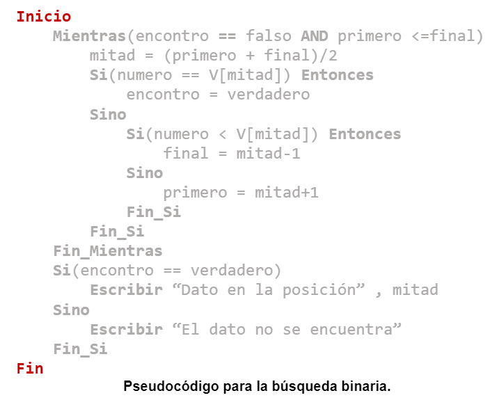

Restricciones
Para utilizar este algoritmo, deben cumplirse dos condiciones:
1. El arreglo en el que se realizará la búsqueda debe estar ordenado.
2. No debe haber elementos repetidos en el arreglo.
Funcionamiento
El método de búsqueda binaria funciona de la siguiente manera:
1. Inicialización
Se declaran 4 variables auxiliares, una para establecer a partir de que parte del arreglo se delimitará el mismo (primero) y otra variable que permita establecer hasta qué parte del arreglo llegará la delimitación (final). La tercera variable permitirá conocer cuál es la mitad del rango establecido entre la variable 'primero' y 'final' (La cual se llamará 'mitad') y por último se declarara una variable booleana la cual permitirá conocer si se ha encontrado el elemento dentro del arreglo durante la búsqueda (encontro).
Se asigna un valor igual a 0 a las variables 'primero' y 'mitad', mientras que a la variable 'final' se le asigna el tamaño del arreglo menos una unidad. Por último, se le asigna un valor igual a falso a la variable 'encontro'.
2. Cálculo de la mitad
Con el propósito de conocer cuál es la mitad del rango en el que se está buscando el elemento a buscar, se suman los valores que tienen las variables 'primero' y 'final' para posteriormente dividir el resultado entre 2. Por último, se asigna el resultado de la división a la variable 'mitad'.
3. Comparación
Se compara el valor que se encuentra en la posición indicada por la variable 'mitad' con el elemento que se está buscado.
4. Identificación
Si el elemento que se encuentra en la posición indicada por la variable 'mitad' es igual al buscado, entonces se modifica el valor de la variable booleana 'encontro', asignándole el valor verdadero.
5. Ajuste del rango de búsqueda
En caso de que el elemento buscado no se encuentre en la posición indicada por la variable 'mitad', entonces se deberá ajustar el rango de la búsqueda.
Si el elemento que se encuentra en la posición indicada por la variable 'mitad' es mayor al elemento buscado, entonces se debe restar en una unidad el valor de la variable 'mitad', cuyo resultado debe asignarse a la variable 'final'.
Si el elemento es menor al buscado, entonces se suma una unidad al valor de 'mitad', asignando el resultado de la operación a la variable 'primero'.
6. Repetición del proceso
El proceso de búsqueda continúa (Regresando al punto 2) mientras el valor de la variable 'encontro' sea igual a falso y la variable 'primero' sea menor o igual a la variable 'final'.
7. Verificación del resultado
Al finalizar el proceso de búsqueda, se revisa el valor de la variable booleana 'encontro'.
Si el valor de la variable es igual a verdadero, entonces eso indicaría que el elemento buscado se encuentra dentro del arreglo en la posición indicada por la variable 'mitad'.
En caso de que el valor sea igual a falso, entonces se considerará que el elemento no se encuentra dentro del arreglo.
Diagrama de flujo

Pseudocódigo

Características
- Únicamente se puede utilizar en lista ordenadas.
- Es considerado como uno de los algoritmos más eficientes al momento de buscar algún elemento entre un conjunto de elementos.
- Es más eficiente en arreglos de gran tamaño.
- Debido a la forma en la cual trabaja, se considera como un algoritmo de búsqueda por intervalos.
- Su implementación se encuentra basada en la técnica divide y vencerás.